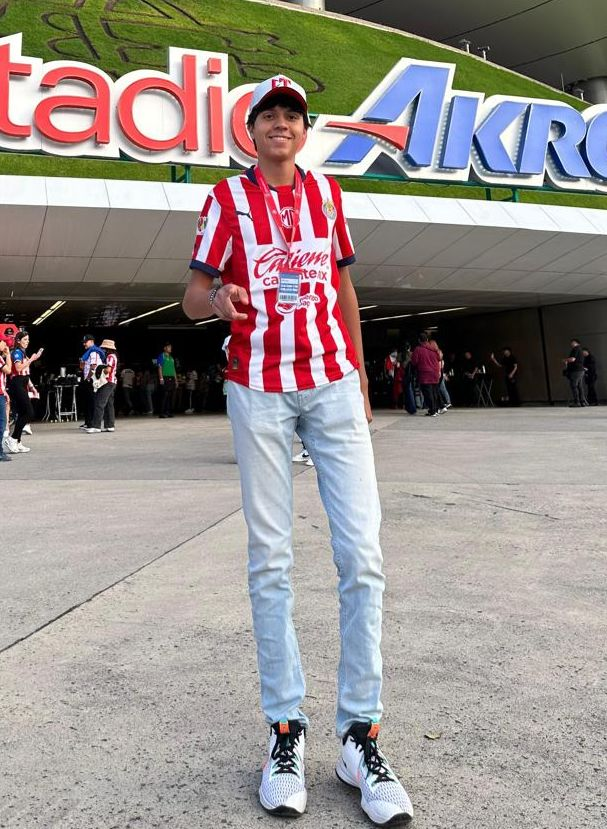
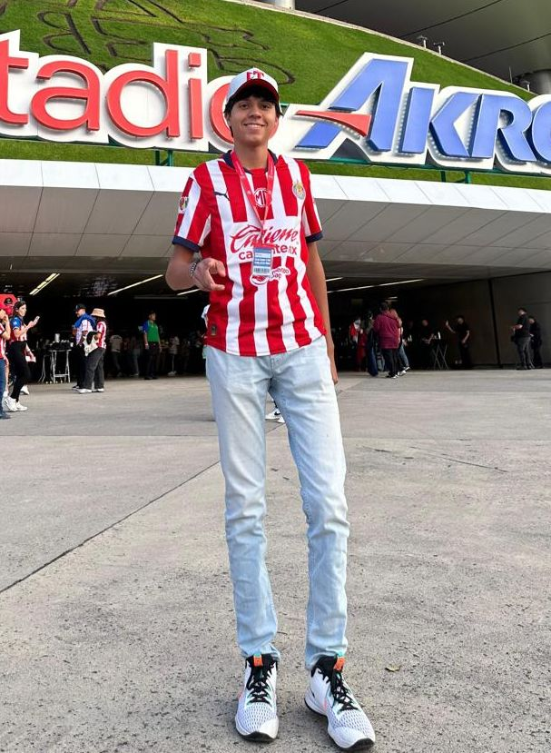
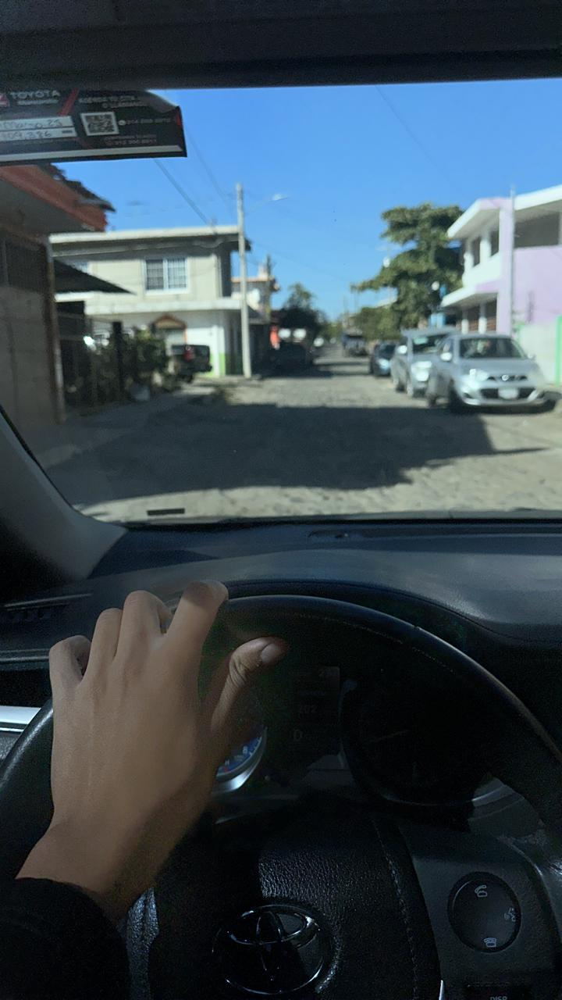
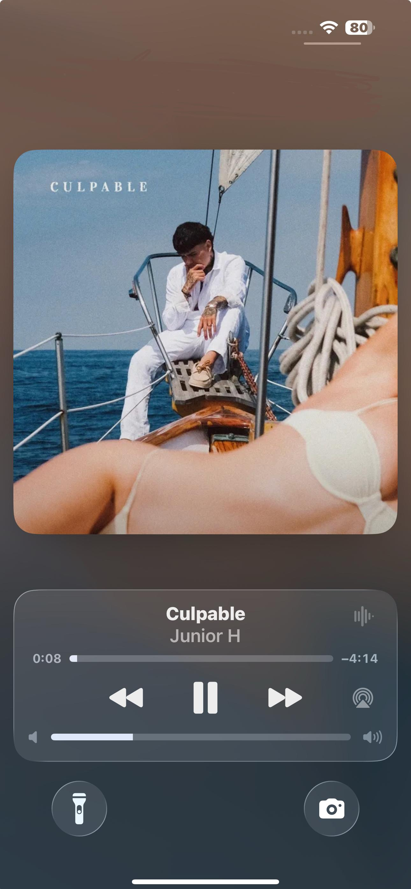
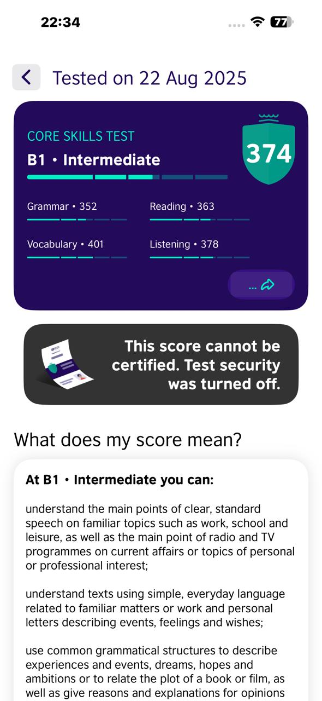

⚽ Futbol
Me encanta ver futbol, soy fan del Club Deportivo Guadalajara y del FC Barcelona. También lo practico cuando tengo tiempo.
"Si lo crees lo puedes lograr - Nunca hay que rendirse - Echando a perder se aprende"
Me encanta ver futbol, soy fan del Club Deportivo Guadalajara y del FC Barcelona. También lo practico cuando tengo tiempo.
Disfruto mucho ver series y películas, acompañado o solo, pero disfruto mucho, la serie que es mi favorita se llama Breakin Bad y The office, y en cuanto a peliculas todas las de Sherk.

me gusta salir con mis amigos, tengo varios que considero buenos amigos y a todos los quiero igual, pero con los que más salgo porque viven cercas de mí se llaman, Beto, Brandom y Aldo mis chiquitines, con ellos salimos a platicar en el pueblo o a tomar, pero nomas poquito, responsablemente.
Disfruto manejar, aún no me dejan manejar fuera de Colima, pero me gusta, así sea para ir a las tortillas me gusta estar en el carro o en la camioneta solo o con mis amigos escuchando la musica que nos gusta.
No puedo vivir sin Spotify Premium. Me gusta la música norteña, banda, regional y más. Mis favoritos: Alfredo Olivas, Junior H y Tombochio. También me gusta cantar y bailar aunque no sea el mejor.
Un proyecto personal es mantener mi promedio o subirlo porque tengo la meta de irme de intercambio a otro pais fuera del continente americano, es una de mis grandes metas.
Uno de mis logros es que termine un curso de ingles, que al principio iba obligado para terminarlo, pero cuando decidi la carrera que iba a estudiar vi que el ingles era importante para la carrera, asi que termine el curso pero creo que aun necesito practicarlo más.
📧 Correo: echavez45@ucol.mx
📱 Teléfono: +52 312 1234567
📸 Instagram: @emyr_ch78
🎵 TikTok: @fideoch78